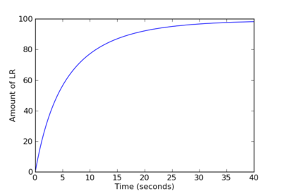

Synopsis
PySB is a framework for building mathematical models of biochemical systems as Python programs. PySB abstracts the complex process of creating equations describing interactions among multiple proteins or other biomolecules into a simple and intuitive domain specific programming language (see example below), which is internally translated into BioNetGen or Kappa rules and from there into systems of equations. PySB makes it straightforward to divide models into modules and to call libraries of reusable elements (macros) that encode standard biochemical actions. These features promote model transparency, reuse and accuracy. PySB also interoperates with standard scientific Python libraries such as NumPy, SciPy and SymPy enabling model simulation and analysis.
Lopez, C. F., Muhlich, J. L., Bachman, J. A. & Sorger, P. K. Programming biological models in Python using PySB. Mol Syst Biol 9, (2013). doi:10.1038/msb.2013.1
Documentation
All of the PySB documentation is available online, courtesy of Read the Docs. The pysb/examples directory in the source tree contains sample models and other scripts if you'd prefer to learn by example. One of these examples and its output is reproduced below.
Download
You can get the latest release of PySB from the Python Package Index. The documentation contains a list of the dependencies and other installation instructions. If you are new to scientific programming in Python, you may want to start by downloading the Enthought Python Distribution (EPD) which already includes most of the dependencies.
For those who are not comfortable installing Python packages or compiling source code, we also provide a PySB virtual appliance with Ubuntu Linux, PySB and its dependencies pre-installed. You'll need virtualization software to run it; we recommend the free and open-source program VirtualBox. There are detailed instructions in the PySB documentation on how to set up the appliance in VirtualBox.
Those who are interested in the PySB source code can clone it with Git:
$ git clone git://github.com/pysb/pysb
Contributing
Development is centered around our GitHub project page. Bugs and other problems should be reported at the issue tracker, and we welcome pull requests for fixes and enhancements. Subscribe to the PySB mailing list by sending an email to pysb@librelist.com, or you can anonymously browse the archives.
Example
Model code:
from pysb import * from pysb.integrate import odesolve from pylab import linspace, plot, xlabel, ylabel, show # A simple model with a reversible binding rule Model() # Declare the monomers Monomer('L', ['s']) Monomer('R', ['s']) # Declare the parameters Parameter('L_0', 100) Parameter('R_0', 200) Parameter('kf', 1e-3) Parameter('kr', 1e-3) # Declare the initial conditions Initial(L(s=None), L_0) Initial(R(s=None), R_0) # Declare the binding rule Rule('L_binds_R', L(s=None) + R(s=None) <> L(s=1) % R(s=1), kf, kr) # Observe the complex Observable('LR', L(s=1) % R(s=1)) if __name__ == '__main__': # Simulate the model through 40 seconds time = linspace(0, 40, 100) print "Simulating..." x = odesolve(model, time) # Plot the trajectory of LR plot(time, x['LR']) xlabel('Time (seconds)') ylabel('Amount of LR') show()
Output:

The above source code is available as hello_pysb.py in the directory of example models and scripts included with the PySB distribution. Note that this simple model does not demonstrate macros or any other higher-order features of PySB modeling. For an advanced model, see EARM 2.0.
Authors
PySB is primarily developed by members of the Sorger Lab at Harvard Medical School and the Lopez Lab at Vanderbilt University:
Jeremy L. Muhlich (jmuhlich@bitflood.org)
Carlos F. Lopez (c.lopez@vanderbilt.edu)
John A. Bachman (bachmanjohn@gmail.com)
Funding
PySB has been supported by the National Institutes of Health under award numbers P50GM68762 (PK Sorger), P01CA139980 (PK Sorger) and K22CA151918 (CF Lopez). The content is solely the responsibility of the authors and does not necessarily represent the official views of the National Institutes of Health.
This material is based upon work supported by the National Science Foundation under Grant Number 1411482 (CF Lopez). Any opinions, findings, and conclusions or recommendations expressed in this material are those of the authors and do not necessarily reflect the views of the National Science Foundation.